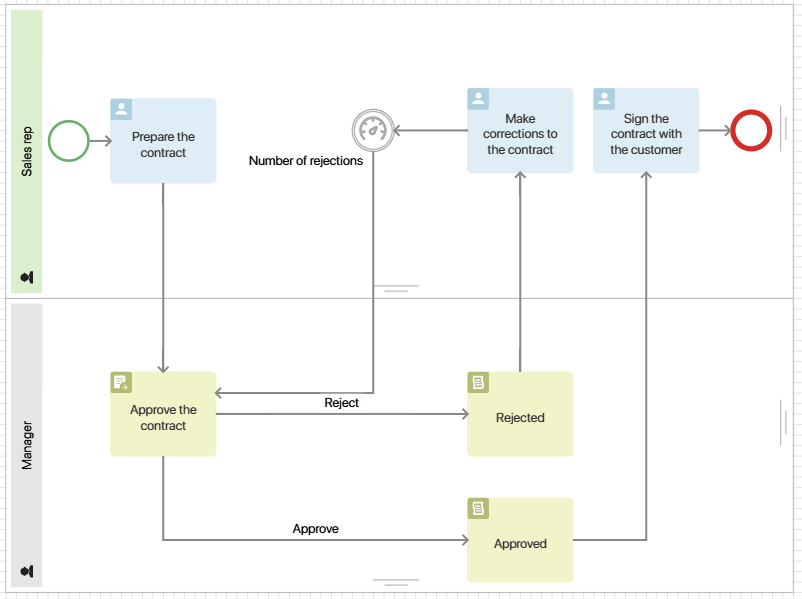
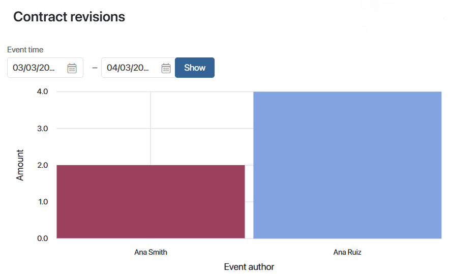
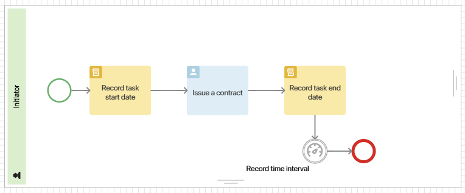
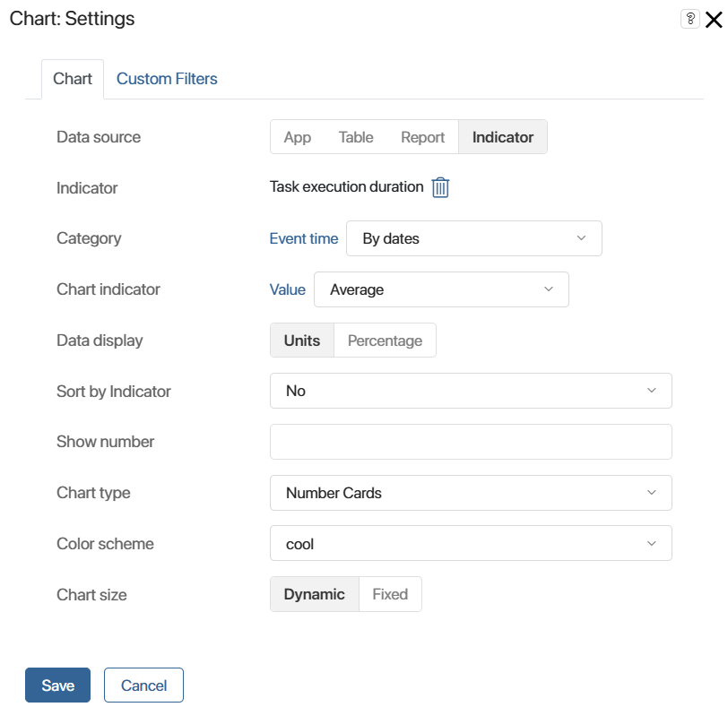

Показатель типа «Счетчик»
Рассмотрим настройку показателя на примере процесса Оформить и согласовать договор. Он состоит из следующих этапов:
- Менеджер подготавливает договор и отправляет руководителю на согласование.
- После того как руководитель ознакомится с договором, он может отклонить его, отправить на доработку или согласовать.
- Если договор был отправлен на доработку, менеджеру придёт задача внести правки. Затем договор будет отправлен руководителю на повторное рассмотрение.
- Если договор был согласован, менеджер организует встречу с заказчиком, и стороны подписывают договор.
В процесс можно добавить показатель, чтобы посчитать, сколько раз менеджер отправил договор на повторное согласование после доработки. Это позволит проанализировать работу сотрудника, отследив количество итераций до правильного оформления договора.
Шаг 1. Создание показателя типа «Счетчик»
Создайте показатель типа Счетчик, например, Количество отказов, и опубликуйте его.
Шаг 2. Настройка бизнес-процесса с показателем типа «Счетчик»
- Перейдите в дизайнер бизнес-процесса Оформить и согласовать договор.
- Чтобы выяснить, сколько раз менеджер отправлял договор на повторное согласование после доработки, используйте графический элемент Установить значение показателя. Разместите его на схеме процесса после задачи Внести исправления в договор.

- Дважды нажмите на блок и откройте его настройки: введите название, укажите показатель Количество отказов.
Для показателя типа Счетчик заполните поле Действие. Чтобы зафиксировать, сколько раз договор повторно отправлялся на согласование, выберите Увеличение счетчика.

Данные на вкладке Значения полей заполнять не нужно. В этом примере используются только системные свойства показателя, в которые автоматически записываются значения из процесса.
- Сохраните настройки блока и опубликуйте процесс.
Шаг 3. Настройка графика для показателя типа «Счетчик»
- Создайте отдельную страницу и разместите на ней виджет График. Так вы сможете визуализировать данные после исполнения экземпляра процесса с показателем.
- В настройках виджета на вкладке График заполните поля:

- Источник данных — отметьте Показатель;
- Показатель — из списка опубликованных показателей выберите Количество отказов;
- Измерение — укажите свойство Автор события, чтобы смотреть, кто из менеджеров выполнял задачу по доработке договора;
- Показатель графика — укажите Количество, чтобы отображать, сколько раз автор события выполнил задачу;
- Представление данных — выберите Единицы;
- остальные настройки оставьте по умолчанию.
- На вкладке Пользовательские фильтры вы можете выбрать свойства показателя для фильтрации данных на графике. Чтобы отслеживать количество раз, когда сотрудник работал с задачей, за определённый период, выберите Время события.
- Сохраните настройки виджета и опубликуйте страницу.
Руководитель может указать период и просмотреть на графике, сколько раз менеджер выполнял задачу по доработке договора. Показатель учитывает все выполненные экземпляры процесса за этот период. Если оформлением договоров занимается несколько менеджеров, вы можете сравнить эффективность их работы.

Показатель типа «Значение»
Рассмотрим настройку показателя на примере процесса Согласовать сумму сделки. Он состоит из следующих этапов:
- Менеджер подготавливает проект договора и указывает в нём предварительную сумму сделки. Для этого на форме задачи он заполняет поле Сумма.
- Затем он обсуждает проект договора с клиентом и предлагает дополнительные услуги.
- Если клиент соглашается приобрести услуги, менеджер корректирует сумму сделки. Для этого он использует то же самое поле Сумма, что и для предварительной суммы.
С помощью показателя мы можем отследить разницу между предварительной и итоговой суммой сделки и отобразить это не графике.
Шаг 1. Создание показателя типа «Значение»
- Создайте показатель типа Значение. Например, Изменение суммы сделки.
- Добавьте в контекст показателя свойства, чтобы фиксировать две суммы из процесса. Для этого перейдите на вкладку Контекст и добавьте переменную Сумма сделки типа Категория. Задайте значения: Предварительная сумма сделки и Итоговая сумма сделки.
- Опубликуйте показатель.
Шаг 2. Настройка бизнес-процесса с показателем типа «Значение»
- Перейдите в дизайнер бизнес-процесса Согласовать сумму сделки.
- Чтобы фиксировать значение предварительной и итоговой суммы, на схеме разместите блок Установить значение показателя: до и после задачи Предложить клиенту дополнительные услуги.

- Дважды нажмите на блок, который размещён до обсуждения дополнительных услуг, и перейдите к его настройкам. Назовите его Значение предварительной суммы и укажите показатель Изменение суммы сделки.
Затем на вкладке Значения полей заполните данные, чтобы значения из процесса передавались в показатель:

- Сумма сделки — выберите переменную показателя и сопоставьте её со значением Предварительная сумма сделки. Таким образом сумма до обсуждения с клиентом запишется как Предварительная сумма сделки;
- Значение — выберите системное свойство показателя и сопоставьте его с контекстной переменной процесса Сумма, в которой менеджер указывает сумму сделки на данном этапе.
- Дважды нажмите на блок, который размещён после обсуждения дополнительных услуг, и перейдите к его настройкам. Назовите его Значение итоговой суммы, укажите показатель Изменение суммы сделки.
На вкладке Значения полей укажите переменные:
- Сумма сделки — переменную показателя сопоставьте со значением Итоговая сумма сделки. Тогда сумма сделки после встречи с клиентом запишется как Итоговая сумма сделки;
- Значение — системное свойство показателя сопоставьте с контекстной переменной процесса Сумма, куда менеджер вносит новую сумму после корректировки договора.
- Опубликуйте процесс.
Шаг 3. Настройка графика для показателя типа «Значение»
- Создайте отдельную страницу и разместите на ней виджет График для визуализации показателя.
- В настройках виджета на вкладке График заполните поля:

- Источник данных — отметьте Показатель;
- Показатель — из списка опубликованных показателей выберите Изменение суммы сделки;
- Измерение — укажите контекстную переменную показателя Сумма сделки, чтобы отобразить на графике предварительную и итоговую сумму;
- Показатель графика — укажите поле показателя Значение и выберите Значение. Тогда на графике отобразятся числовые значения, введённые менеджером в поле Сумма на формах задач Подготовить проект договора и Предложить клиенту дополнительные услуги;
- Представление данных — выберите Единицы;
- остальные настройки оставьте по умолчанию.
- На вкладке Пользовательские фильтры вы можете выбрать свойства показателя для фильтрации данных на графике. Чтобы отслеживать разницу между предварительной и итоговой суммой сделок за период, выберите Время события.
- Сохраните настройки виджета и опубликуйте страницу.
Руководитель может указать период и просмотреть на графике значения, зафиксированные для предварительной и итоговой суммы сделки. Показатель учитывает все выполненные экземпляры процесса за этот период.
Показатель типа «Временной интервал»
Рассмотрим настройку показателя на примере бизнес-процесса Оформить договор.
С помощью показателя можно узнать, сколько времени менеджер затратил на выполнение задачи по оформлению договора. Фиксировать даты начала и завершения задачи можно, используя скрипт.
Шаг 1. Создание показателя типа «Временной интервал»
Создайте показатель типа Временной интервал. Назовите его, например, Время выполнения задачи.
Шаг 2. Настройка бизнес-процесса для показателя типа «Временной интервал»
- Перейдите в дизайнер бизнес-процесса Оформить договор.
- На вкладке Контекст добавьте переменные Дата начала задачи и Дата завершения задачи типа Дата/время. В них будет записываться время начала и окончания задачи.
- На вкладке Скрипты пропишите следующие команды:

- Перейдите на схему процесса. Добавьте блоки Скрипт: один разместите до блока с задачей Оформить договор, а второй после неё.

- В настройках блока Скрипт для фиксации даты назначения задачи укажите функцию
start_time. В настройках блока для фиксации даты завершения укажите функциюfinish_time. - Чтобы передать в показатель время от назначения и до завершения задачи, используйте графический элемент Установить значение показателя. Разместите его на схеме бизнес-процесса после блоков скрипта и задачи.
- Дважды нажмите на блок и задайте его настройки. На вкладке Основное введите название, например, Зафиксировать интервал времени, и выберите показатель Время выполнения задачи.
На вкладке Значения полей заполните данные, чтобы значения из процесса передавались в показатель:
- Начало интервала — выберите системное свойство показателя и сопоставьте его в контекстной переменной процесса Дата начала задачи. Так вы передадите в показатель дату назначения задачи;
- Конец интервала — выберите свойство показателя и сопоставьте его с переменной процесса Дата завершения задачи. Тогда вы передадите в него дату закрытия задачи.

- Опубликуйте процесс.
Шаг 3. Настройка графика для показателя «Временной интервал»
- Создайте отдельную страницу и разместите на ней виджет График для визуализации показателя.
- В настройках виджета на вкладке График заполните поля:

- Источник данных — отметьте Показатель;
- Показатель — из списка опубликованных показателей выберите Время выполнения задачи;
- Измерение — укажите Время события и выберите По датам. Так вы сможете посмотреть, сколько времени сотрудник выполнял задачу в определённый день;
- Показатель графика — укажите Значение и выберите Среднее значение;
- Представление данных — выберите Единицы;
- Тип графика — выберите Числовые карты;
- остальные настройки можете оставить по умолчанию.
- На вкладке Пользовательские фильтры вы можете выбрать свойства показателя для фильтрации данных на графике. Чтобы отслеживать работу определённого сотрудника с задачей, выберите Автор события.
- Сохраните настройки виджета и опубликуйте страницу.
Руководитель может выбрать менеджера и просмотреть на графике, сколько часов прошло с момента назначения задачи до того, как сотрудник её закрыл. Показатель учитывает все выполненные экземпляры процесса за день.